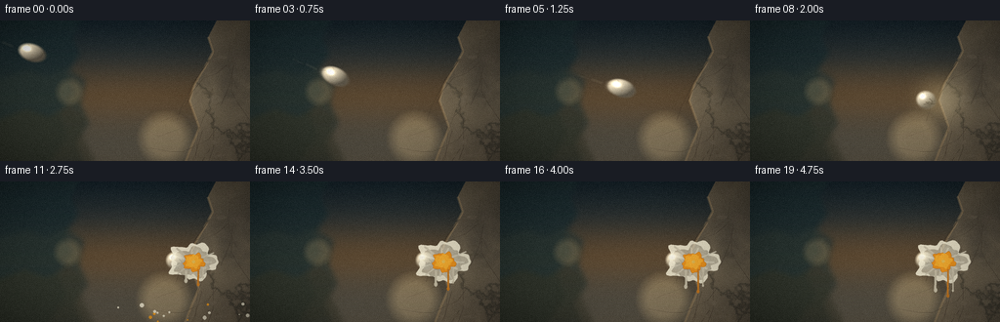
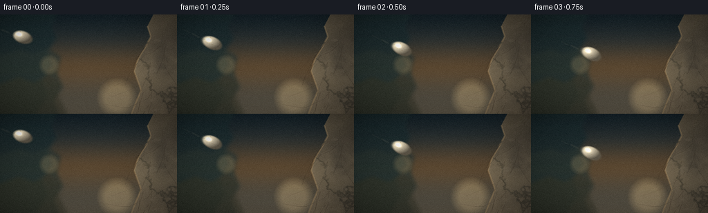
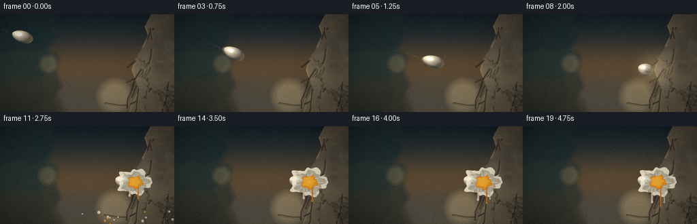
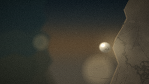
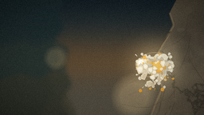
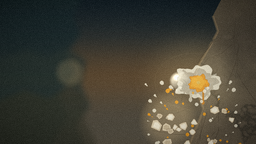
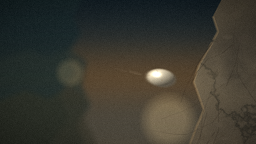
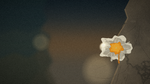
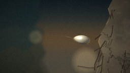

CODING AGENTS AS PIXEL WORLD MODELS
traex/DeepSeek-V4.1-Flash · phygen_131
点击播放 · 原生 RGB 像素
逐轮保存的候选
回放视频、检查图与代码变化。
每份候选均可单独播放。实际图片检查记录在下方工具轨迹中。
候选 01播放与检查图
点击播放 · 原生 RGB 像素


展开代码变化
--- 上一保存版本
+++ 本次保存版本
@@ -0,0 +1,609 @@
+from pathlib import Path
+import math
+
+import numpy as np
+from PIL import Image, ImageDraw, ImageFilter
+
+import artifact_io
+
+
+W, H = 256, 144
+N, FPS = 20, 4.0
+S = 4
+RW, RH = W * S, H * S
+CASE_DIR = Path(__file__).resolve().parent
+
+IMPACT_FRAME = 8
+IMPACT = np.array([195.0, 82.0])
+EGG_START = np.array([33.0, 33.0])
+EGG_CONTACT = np.array([181.0, 82.0])
+
+
+def srgb(values):
+ return np.clip(values, 0, 255).astype(np.uint8)
+
+
+def fractal_noise(seed, w, h, octaves=5, persistence=0.52):
+ rng = np.random.default_rng(seed)
+ total = np.zeros((h, w), np.float32)
+ norm = 0.0
+ for octave in range(octaves):
+ gw = max(2, int(2 ** (octave + 2)))
+ gh = max(2, int(gw * h / w))
+ small = rng.random((gh, gw), dtype=np.float32)
+ layer = np.asarray(
+ Image.fromarray((small * 255).astype(np.uint8)).resize(
+ (w, h), Image.Resampling.BICUBIC
+ ),
+ dtype=np.float32,
+ ) / 255.0
+ weight = persistence ** octave
+ total += layer * weight
+ norm += weight
+ total /= norm
+ lo, hi = np.percentile(total, [1.5, 98.5])
+ return np.clip((total - lo) / max(hi - lo, 1e-5), 0, 1)
+
+
+def gradient_image(top, bottom, w, h):
+ y = np.linspace(0, 1, h, dtype=np.float32)[:, None, None]
+ colors = np.asarray(top, np.float32)[None, None, :] * (1 - y)
+ colors += np.asarray(bottom, np.float32)[None, None, :] * y
+ return np.repeat(colors, w, axis=1)
+
+
+def soft_ellipse_mask(w, h, cx, cy, rx, ry, feather):
+ yy, xx = np.mgrid[0:h, 0:w].astype(np.float32)
+ r = np.sqrt(((xx - cx) / rx) ** 2 + ((yy - cy) / ry) ** 2)
+ return np.clip((1.0 - r) * feather, 0, 1)
+
+
+def build_far_background():
+ top = (25, 39, 47)
+ mid = (93, 88, 76)
+ bottom = (42, 43, 39)
+ sky = gradient_image(top, mid, RW, RH)
+ yy = np.linspace(0, 1, RH, dtype=np.float32)[:, None]
+ warm_haze = np.exp(-((yy - 0.53) / 0.21) ** 2)
+ sky = sky * (1 - 0.25 * warm_haze[..., None])
+ sky += np.array([44, 25, 7], np.float32)[None, None, :] * warm_haze[..., None]
+
+ far = Image.fromarray(srgb(sky))
+ draw = ImageDraw.Draw(far, "RGBA")
+
+ # Layered, out-of-focus canyon walls.
+ draw.polygon(
+ [(0, 0), (330, 0), (297, 72), (328, 139), (274, 214), (305, 293),
+ (241, 377), (276, 470), (207, 576), (0, 576)],
+ fill=(31, 48, 52, 218),
+ )
+ draw.polygon(
+ [(0, 239), (118, 205), (196, 231), (277, 195), (351, 245),
+ (330, 340), (366, 422), (311, 500), (343, 576), (0, 576)],
+ fill=(45, 57, 54, 185),
+ )
+ draw.polygon(
+ [(0, 404), (107, 363), (198, 395), (284, 348), (352, 393),
+ (339, 474), (390, 576), (0, 576)],
+ fill=(58, 59, 48, 152),
+ )
+ far = far.filter(ImageFilter.GaussianBlur(10.5))
+
+ arr = np.asarray(far, dtype=np.float32)
+ # Warm bokeh and airborne dust in the distant air.
+ glow = np.zeros((RH, RW, 3), np.float32)
+ for cx, cy, r, strength in [
+ (169, 121, 30, 0.35), (237, 92, 19, 0.28), (118, 171, 22, 0.22),
+ (329, 170, 39, 0.25), (71, 73, 16, 0.18), (466, 127, 28, 0.15),
+ (615, 91, 18, 0.11), (707, 157, 27, 0.10),
+ ]:
+ glow += (
+ soft_ellipse_mask(RW, RH, cx * S, cy * S, r * S, r * S, 2.2)[..., None]
+ * np.array([255, 198, 115], np.float32)[None, None, :]
+ * strength
+ )
+ arr = 255 - (255 - arr) * np.exp(-glow / 255.0)
+ return Image.fromarray(srgb(arr))
+
+
+def build_rock():
+ noise = fractal_noise(918, RW, RH, octaves=7, persistence=0.55)
+ fine = fractal_noise(121, RW, RH, octaves=5, persistence=0.48)
+ yy, xx = np.mgrid[0:RH, 0:RW].astype(np.float32)
+ yn = yy / RH
+ xn = xx / RW
+
+ base = np.empty((RH, RW, 3), np.float32)
+ base[..., 0] = 91 + 32 * noise + 14 * fine + 10 * (1 - xn)
+ base[..., 1] = 84 + 27 * noise + 12 * fine + 7 * (1 - xn)
+ base[..., 2] = 72 + 20 * noise + 9 * fine
+
+ # Broad planes, mineral veins and cool shadowed cavities.
+ plane = np.sin(xx * 0.008 + yy * 0.013 + noise * 5.0)
+ base += plane[..., None] * np.array([7, 6, 4], np.float32)
+ vein = np.exp(-((noise - 0.57) / 0.027) ** 2)
+ base -= vein[..., None] * np.array([24, 20, 16], np.float32)
+ base -= (0.45 + 0.55 * xn)[..., None] * np.array([18, 15, 12], np.float32)
+ base += np.clip(1 - xn * 1.25, 0, 1)[..., None] * np.array([24, 18, 11], np.float32)
+ return Image.fromarray(srgb(base))
+
+
+def rock_polygon():
+ points = [
+ (226, -8), (256, -8), (256, 144), (190, 144), (197, 126),
+ (204, 110), (199, 96), (194, 82), (199, 66), (209, 49),
+ (218, 32), (213, 17),
+ ]
+ return [(int(x * S), int(y * S)) for x, y in points]
+
+
+def compose_scene():
+ far = build_far_background()
+ scene = far.convert("RGB")
+ rock = build_rock()
+ mask = Image.new("L", (RW, RH), 0)
+ ImageDraw.Draw(mask).polygon(rock_polygon(), fill=255)
+ mask = mask.filter(ImageFilter.GaussianBlur(0.7))
+ scene.paste(rock, (0, 0), mask)
+
+ overlay = Image.new("RGBA", (RW, RH), (0, 0, 0, 0))
+ draw = ImageDraw.Draw(overlay, "RGBA")
+
+ # Sun-catching broken left edge.
+ edge = [
+ (213, 17), (218, 32), (209, 49), (199, 66), (194, 82),
+ (199, 96), (204, 110), (197, 126), (190, 144),
+ ]
+ draw.line([(x * S, y * S) for x, y in edge], fill=(193, 157, 108, 76), width=9)
+ draw.line([(x * S, y * S) for x, y in edge], fill=(221, 186, 132, 55), width=3)
+
+ rng = np.random.default_rng(61)
+ # Cracks and faceted chips make the surface read as solid stone.
+ for _ in range(13):
+ x = rng.uniform(207, 250) * S
+ y = rng.uniform(10, 138) * S
+ pts = [(x, y)]
+ ang = rng.uniform(1.6, 2.5)
+ for _ in range(rng.integers(2, 5)):
+ length = rng.uniform(9, 28) * S
+ x += math.cos(ang) * length
+ y += math.sin(ang) * length
+ pts.append((x, y))
+ ang += rng.uniform(-0.55, 0.5)
+ draw.line(pts, fill=(38, 31, 26, int(rng.uniform(45, 95))), width=int(rng.uniform(1.2, 2.8)))
+ for _ in range(18):
+ cx = rng.uniform(209, 251) * S
+ cy = rng.uniform(5, 139) * S
+ rx = rng.uniform(1.5, 8.0) * S
+ ry = rng.uniform(1.0, 5.0) * S
+ shade = rng.uniform(-25, 32)
+ draw.ellipse(
+ (cx - rx, cy - ry, cx + rx, cy + ry),
+ fill=(int(99 + shade), int(90 + shade), int(75 + shade), int(rng.uniform(28, 58))),
+ )
+ scene = Image.alpha_composite(scene.convert("RGBA"), overlay)
+ return scene.convert("RGB")
+
+
+def segment_distance(px, py, x1, y1, x2, y2):
+ vx, vy = x2 - x1, y2 - y1
+ denom = vx * vx + vy * vy
+ t = np.clip(((px - x1) * vx + (py - y1) * vy) / max(denom, 1e-6), 0, 1)
+ return np.hypot(px - (x1 + t * vx), py - (y1 + t * vy))
+
+
+def draw_egg(canvas, cx, cy, major, minor, angle_deg, opacity=1.0, crack=0.0, squash=1.0):
+ a = major * S * 0.5 * squash
+ b = minor * S * 0.5
+ pad = 5
+ cxh, cyh = cx * S, cy * S
+ x0 = max(0, int(cxh - a - pad))
+ x1 = min(RW, int(cxh + a + pad) + 1)
+ y0 = max(0, int(cyh - b - pad))
+ y1 = min(RH, int(cyh + b + pad) + 1)
+ if x1 <= x0 or y1 <= y0:
+ return
+
+ yy, xx = np.mgrid[y0:y1, x0:x1].astype(np.float32)
+ dx, dy = xx - cxh, yy - cyh
+ ang = math.radians(angle_deg)
+ ca, sa = math.cos(ang), math.sin(ang)
+ u = ca * dx + sa * dy
+ v = -sa * dx + ca * dy
+ r = (u / a) ** 2 + (v / b) ** 2
+ mask = np.clip((1.0 - r) * 2.2, 0, 1)
+ inside = r <= 1.12
+
+ nx = np.clip(u / a, -1, 1)
+ ny = np.clip(v / b, -1, 1)
+ nz = np.sqrt(np.clip(1 - nx * nx - ny * ny, 0, 1))
+
+ light = np.array([-0.55, -0.63, 0.55], np.float32)
+ light /= np.linalg.norm(light)
+ wx = ca * nx - sa * ny
+ wy = sa * nx + ca * ny
+ diffuse = np.clip(wx * light[0] + wy * light[1] + nz * light[2], 0, 1)
+ half = light + np.array([0, 0, 1], np.float32)
+ half /= np.linalg.norm(half)
+ spec = np.clip(wx * half[0] + wy * half[1] + nz * half[2], 0, 1) ** 34
+ rim = np.clip(1 - nz, 0, 1) ** 2.4
+
+ base = np.array([232, 220, 191], np.float32)
+ shade = 0.39 + 0.72 * diffuse
+ rgb = base[None, None, :] * shade[..., None]
+ rgb += np.array([52, 35, 18], np.float32)[None, None, :] * rim[..., None]
+ rgb += np.array([255, 244, 216], np.float32)[None, None, :] * (spec * 0.78)[..., None]
+ rgb -= np.array([42, 31, 22], np.float32)[None, None, :] * np.clip((r - 0.72) / 0.4, 0, 1)[..., None]
+
+ # Sparse shell freckles, moving with the egg's local coordinates.
+ speck = (
+ np.sin(u * 0.19 + np.sin(v * 0.11) * 2.0)
+ + np.sin(v * 0.23 - u * 0.037)
+ + np.sin((u + v) * 0.083)
+ )
+ freckle = (speck > 2.35) & (nz > 0.16)
+ rgb[freckle] = rgb[freckle] * 0.82 + np.array([128, 102, 71], np.float32) * 0.18
+
+ if crack > 0:
+ lines = [
+ ((0.91, 0.02), (0.60, 0.18), (0.31, 0.07), (0.02, 0.25)),
+ ((0.61, 0.17), (0.48, -0.12), (0.22, -0.25)),
+ ((0.32, 0.08), (0.16, 0.36), (-0.09, 0.47)),
+ ((0.55, 0.18), (0.31, 0.31), (0.06, 0.19)),
+ ]
+ crack_alpha = np.zeros_like(u)
+ for line in lines:
+ for p0, p1 in zip(line[:-1], line[1:]):
+ dist = segment_distance(
+ u / a, v / b, p0[0], p0[1], p1[0], p1[1]
+ )
+ crack_alpha = np.maximum(crack_alpha, np.exp(-(dist / 0.035) ** 2))
+ crack_alpha *= mask * crack
+ rgb = rgb * (1 - 0.74 * crack_alpha[..., None])
+ rgb += np.array([255, 238, 205], np.float32) * (0.12 * crack_alpha[..., None])
+
+ alpha = mask * opacity
+ out = canvas[y0:y1, x0:x1].astype(np.float32)
+ out = out * (1 - alpha[..., None]) + rgb * alpha[..., None]
+ canvas[y0:y1, x0:x1] = srgb(out)
+
+
+def egg_state(frame):
+ if frame >= IMPACT_FRAME:
+ return EGG_CONTACT, 0, 1
+ u = frame / IMPACT_FRAME
+ center = EGG_START * (1 - u) + EGG_CONTACT * u
+ center[1] += 7.0 * math.sin(math.pi * u)
+ angle = 18.0 + 8.5 * math.sin(u * math.pi * 1.7)
+ return center, angle, 0
+
+
+def draw_motion_streak(canvas, frame):
+ if frame >= IMPACT_FRAME:
+ return
+ center, angle, _ = egg_state(frame)
+ if frame > 0:
+ prev, _, _ = egg_state(max(0, frame - 1))
+ delta = center - prev
+ norm = np.linalg.norm(delta)
+ if norm > 1:
+ direction = delta / norm
+ else:
+ direction = np.array([1.0, 0.35])
+ else:
+ direction = np.array([1.0, 0.35])
+ direction /= np.linalg.norm(direction)
+ perp = np.array([-direction[1], direction[0]])
+ overlay = Image.new("RGBA", (RW, RH), (0, 0, 0, 0))
+ draw = ImageDraw.Draw(overlay, "RGBA")
+ for k, width, alpha in [(20, 3, 18), (35, 2, 12), (52, 1, 7)]:
+ p0 = (center - direction * k + perp * 0.8) * S
+ p1 = (center - direction * (k + 13)) * S
+ draw.line([tuple(p0), tuple(p1)], fill=(244, 226, 188, alpha), width=width * S)
+ overlay = overlay.filter(ImageFilter.GaussianBlur(2.2))
+ base = canvas.astype(np.float32)
+ a = np.asarray(overlay, np.float32)
+ aa = a[..., 3:4] / 255.0
+ base = base * (1 - aa) + a[..., :3] * aa
+ canvas[:] = srgb(base)
+
+
+def draw_egg_sequence(canvas, frame):
+ draw_motion_streak(canvas, frame)
+ if frame < IMPACT_FRAME:
+ center, angle, _ = egg_state(frame)
+ if frame > 0:
+ prev, _, _ = egg_state(frame - 1)
+ velocity = center - prev
+ for back, opacity in [(0.19, 0.18), (0.11, 0.27), (0.055, 0.38)]:
+ ghost = center - velocity * back
+ draw_egg(canvas, ghost[0], ghost[1], 31.0, 19.0, angle - back * 30, opacity)
+ draw_egg(canvas, center[0], center[1], 32.0, 20.0, angle, 1.0)
+ else:
+ draw_egg(
+ canvas, EGG_CONTACT[0], EGG_CONTACT[1], 28.0, 20.5,
+ 19.0, 0.94, crack=0.85, squash=0.82,
+ )
+
+
+def splat_shape(center, rx, ry, phase, points=64):
+ pts = []
+ for i in range(points):
+ t = 2 * math.pi * i / points
+ ripple = (
+ 1.0
+ + 0.13 * math.sin(5 * t + phase)
+ + 0.075 * math.sin(9 * t - phase * 1.7)
+ + 0.045 * math.sin(15 * t + 0.8)
+ )
+ pts.append(
+ (
+ (center[0] + math.cos(t) * rx * ripple) * S,
+ (center[1] + math.sin(t) * ry * ripple) * S,
+ )
+ )
+ return pts
+
+
+def draw_splat(canvas, frame):
+ if frame < IMPACT_FRAME:
+ return
+ age = max(0, frame - IMPACT_FRAME)
+ growth = min(1.0, age / 4.0)
+ overlay = Image.new("RGBA", (RW, RH), (0, 0, 0, 0))
+ draw = ImageDraw.Draw(overlay, "RGBA")
+ center = IMPACT + np.array([3.0, 0.5])
+
+ if age == 0:
+ # Contact flash and a first hairline of albumen.
+ draw.ellipse(
+ ((center[0] - 3.2) * S, (center[1] - 2.1) * S,
+ (center[0] + 3.2) * S, (center[1] + 2.1) * S),
+ fill=(255, 243, 208, 210),
+ )
+ return
+
+ white_rx = 17.0 + 9.0 * growth
+ white_ry = 12.0 + 8.0 * growth
+ white_pts = splat_shape(center, white_rx, white_ry, 1.3, 72)
+ draw.polygon(white_pts, fill=(239, 234, 211, 218), outline=(211, 204, 183, 170))
+ draw.polygon(
+ splat_shape(center + np.array([0.4, 0.8]), white_rx * 0.83, white_ry * 0.79, 2.1, 72),
+ fill=(229, 224, 201, 146),
+ )
+
+ # Milky radial fingers.
+ rng = np.random.default_rng(42)
+ for i in range(11):
+ t = 2 * math.pi * i / 11 + rng.uniform(-0.12, 0.12)
+ inner = 6.0 + 3.0 * growth
+ outer = (14.0 + 10.0 * growth) * rng.uniform(0.72, 1.15)
+ width = rng.uniform(1.0, 2.4) * S
+ p0 = (center[0] + math.cos(t) * inner) * S, (center[1] + math.sin(t) * inner * 0.8) * S
+ p1 = (center[0] + math.cos(t) * outer) * S, (center[1] + math.sin(t) * outer * 0.74) * S
+ draw.line([p0, p1], fill=(242, 238, 216, int(115 + 55 * growth)), width=int(width))
+
+ # Yolk: an orange, softly shaded irregular pool.
+ yolk_center = center + np.array([1.1, 0.8 + 0.3 * math.sin(age)])
+ yolk_pts = splat_shape(yolk_center, 7.7 + 3.6 * growth, 6.6 + 3.0 * growth, 0.7, 56)
+ draw.polygon(yolk_pts, fill=(227, 144, 34, 244), outline=(174, 91, 18, 210))
+ draw.polygon(
+ splat_shape(yolk_center + np.array([-0.6, -0.8]), 5.8 + 2.6 * growth, 4.8 + 2.2 * growth, 1.8, 48),
+ fill=(246, 174, 48, 228),
+ )
+ draw.ellipse(
+ ((yolk_center[0] - 2.1) * S, (yolk_center[1] - 2.0) * S,
+ (yolk_center[0] + 1.2) * S, (yolk_center[1] + 1.1) * S),
+ fill=(255, 207, 83, 185),
+ )
+
+ # Albumen and yolk drips elongate down the vertical stone face.
+ for i, (xoff, start_y, base_len, width, yolk) in enumerate([
+ (-7.0, 9.0, 7.0, 2.3, False),
+ (5.5, 8.0, 11.0, 1.8, True),
+ (10.5, 6.0, 5.0, 1.3, False),
+ ]):
+ length = (base_len + age * (1.2 + i * 0.25)) * min(1.0, 0.4 + growth)
+ x = center[0] + xoff
+ y0 = center[1] + start_y
+ y1 = y0 + length
+ color = (210, 124, 29, 205) if yolk else (232, 226, 202, 178)
+ draw.line([(x * S, y0 * S), ((x + 0.3 * math.sin(age + i)) * S, y1 * S)],
+ fill=color, width=int(width * S))
+ draw.ellipse(
+ ((x - width * 0.7) * S, (y1 - width) * S,
+ (x + width * 0.7) * S, (y1 + width) * S),
+ fill=color,
+ )
+
+ canvas[:] = np.asarray(
+ Image.alpha_composite(Image.fromarray(canvas).convert("RGBA"), overlay).convert("RGB")
+ )
+
+
+def particle_tables():
+ rng = np.random.default_rng(713)
+ shards = []
+ for i in range(26):
+ if i < 8:
+ vel = np.array([rng.uniform(-78, -18), rng.uniform(-68, -8)])
+ size = rng.uniform(2.8, 6.8)
+ elif i < 19:
+ vel = np.array([rng.uniform(-62, 78), rng.uniform(-102, 35)])
+ size = rng.uniform(2.0, 5.6)
+ else:
+ vel = np.array([rng.uniform(-18, 42), rng.uniform(-35, 65)])
+ size = rng.uniform(1.6, 4.0)
+ shape = []
+ for j in range(rng.integers(5, 8)):
+ t = 2 * math.pi * j / 6 + rng.uniform(-0.28, 0.28)
+ rad = rng.uniform(0.62, 1.0)
+ shape.append((math.cos(t) * rad, math.sin(t) * rad))
+ shards.append({
+ "vel": vel,
+ "size": size,
+ "shape": shape,
+ "spin": rng.uniform(-8, 8),
+ "phase": rng.uniform(0, 6.28),
+ "inner": bool(rng.random() < 0.55),
+ })
+
+ drops = []
+ for i in range(74):
+ yolk = rng.random() < 0.42
+ drops.append({
+ "vel": np.array([rng.uniform(-98, 92), rng.uniform(-115, 80)]),
+ "radius": rng.uniform(0.45, 2.4),
+ "yolk": yolk,
+ "phase": rng.uniform(0, 6.28),
+ })
+ return shards, drops
+
+
+SHARDS, DROPS = particle_tables()
+
+
+def rotate_point(x, y, angle):
+ ca, sa = math.cos(angle), math.sin(angle)
+ return x * ca - y * sa, x * sa + y * ca
+
+
+def draw_impact_debris(canvas, frame):
+ if frame <= IMPACT_FRAME:
+ return
+ t = (frame - IMPACT_FRAME) / FPS
+ overlay = Image.new("RGBA", (RW, RH), (0, 0, 0, 0))
+ draw = ImageDraw.Draw(overlay, "RGBA")
+
+ # Expanding translucent pressure ring.
+ ring_age = (frame - IMPACT_FRAME) / FPS
+ if ring_age <= 0.55:
+ rr = (5.0 + 38.0 * ring_age / 0.55) * S
+ alpha = int(100 * (1 - ring_age / 0.55))
+ draw.ellipse(
+ (IMPACT[0] * S - rr, IMPACT[1] * S - rr * 0.72,
+ IMPACT[0] * S + rr, IMPACT[1] * S + rr * 0.72),
+ outline=(255, 232, 174, alpha), width=max(1, int(1.8 * S * (1 - ring_age))),
+ )
+
+ # Fine albumen spray first, then heavier shell pieces.
+ for d in DROPS:
+ pos = IMPACT + d["vel"] * t + np.array([0, 0.5 * 460 * t * t])
+ if not (-4 <= pos[0] <= W + 4 and -4 <= pos[1] <= H + 4):
+ continue
+ r = d["radius"] * (0.82 + 0.15 * math.sin(d["phase"] + frame))
+ color = (239, 157, 35, 225) if d["yolk"] else (241, 236, 213, 205)
+ if np.linalg.norm(d["vel"]) > 70 and t < 0.7:
+ tail = pos - d["vel"] * 0.018
+ draw.line(
+ [(tail[0] * S, tail[1] * S), (pos[0] * S, pos[1] * S)],
+ fill=color, width=max(1, int(r * 1.2 * S)),
+ )
+ draw.ellipse(
+ ((pos[0] - r) * S, (pos[1] - r) * S,
+ (pos[0] + r) * S, (pos[1] + r) * S),
+ fill=color,
+ )
+
+ for shard in SHARDS:
+ pos = IMPACT + shard["vel"] * t + np.array([0, 0.5 * 520 * t * t])
+ if not (-10 <= pos[0] <= W + 10 and -10 <= pos[1] <= H + 10):
+ continue
+ angle = shard["phase"] + shard["spin"] * t
+ pts = []
+ for x, y in shard["shape"]:
+ rx, ry = rotate_point(x * shard["size"], y * shard["size"], angle)
+ pts.append(((pos[0] + rx) * S, (pos[1] + ry) * S))
+ outer = (224, 211, 181, 248)
+ inner = (247, 241, 219, 245) if shard["inner"] else (203, 187, 155, 248)
+ draw.polygon(pts, fill=outer, outline=(121, 96, 69, 205))
+ center = (pos[0] * S, pos[1] * S)
+ inset = []
+ for x, y in pts:
+ inset.append((center[0] + (x - center[0]) * 0.61, center[1] + (y - center[1]) * 0.61))
+ draw.polygon(inset, fill=inner)
+
+ canvas[:] = np.asarray(
+ Image.alpha_composite(Image.fromarray(canvas).convert("RGBA"), overlay).convert("RGB")
+ )
+
+
+def add_impact_light(canvas, frame):
+ if frame not in (IMPACT_FRAME, IMPACT_FRAME + 1, IMPACT_FRAME + 2):
+ return
+ strength = {IMPACT_FRAME: 0.75, IMPACT_FRAME + 1: 0.44, IMPACT_FRAME + 2: 0.20}[frame]
+ glow = Image.new("RGB", (RW, RH), (0, 0, 0))
+ draw = ImageDraw.Draw(glow)
+ r = int((12 + 13 * (frame - IMPACT_FRAME)) * S)
+ cx, cy = int(IMPACT[0] * S), int(IMPACT[1] * S)
+ draw.ellipse((cx - r, cy - r, cx + r, cy + r), fill=(255, 218, 139))
+ glow = glow.filter(ImageFilter.GaussianBlur(13 * S))
+ arr = canvas.astype(np.float32)
+ g = np.asarray(glow, np.float32)
+ arr = 255 - (255 - arr) * np.exp(-g * strength / 210.0)
+ canvas[:] = srgb(arr)
+
+
+def camera_transform(image, frame):
+ zoom = 1.0 + 0.014 * frame / (N - 1)
+ shake_x = 0.0
+ shake_y = 0.0
+ if IMPACT_FRAME <= frame <= IMPACT_FRAME + 3:
+ decay = 1.0 - (frame - IMPACT_FRAME) / 4.0
+ shake_x = 1.6 * decay * math.sin((frame - IMPACT_FRAME) * 2.8)
+ shake_y = 1.0 * decay * math.cos((frame - IMPACT_FRAME) * 2.3)
+ cw, ch = RW / zoom, RH / zoom
+ cx = RW * 0.52 + shake_x * S
+ cy = RH * 0.52 + shake_y * S
+ x0 = int(round(cx - cw / 2))
+ y0 = int(round(cy - ch / 2))
+ x0 = max(0, min(RW - int(cw), x0))
+ y0 = max(0, min(RH - int(ch), y0))
+ crop = image.crop((x0, y0, x0 + int(cw), y0 + int(ch)))
+ return crop.resize((W, H), Image.Resampling.LANCZOS)
+
+
+def finish_frame(image, frame):
+ arr = np.asarray(image, np.float32)
+ yy, xx = np.mgrid[0:H, 0:W].astype(np.float32)
+ nx = (xx - W * 0.5) / (W * 0.5)
+ ny = (yy - H * 0.5) / (H * 0.5)
+ vignette = np.clip(1.0 - 0.19 * (nx * nx + ny * ny), 0, 1)
+ arr *= vignette[..., None]
+
+ # Slight filmic contrast and warm/cool separation.
+ arr = 128 + (arr - 128) * 1.045
+ arr[..., 0] += 1.4
+ arr[..., 2] -= 1.1
+ rng = np.random.default_rng(8000 + frame)
+ grain = rng.normal(0, 2.1, (H, W, 1)).astype(np.float32)
+ arr += grain
+ return srgb(arr)
+
+
+def render_frames():
+ scene = compose_scene()
+ frames = []
+ for frame in range(N):
+ canvas = np.array(scene, copy=True)
+ draw_egg_sequence(canvas, frame)
+ draw_splat(canvas, frame)
+ draw_impact_debris(canvas, frame)
+ image = Image.fromarray(canvas)
+ add_impact_light(canvas, frame)
+ image = Image.fromarray(canvas)
+ image = camera_transform(image, frame)
+ frames.append(finish_frame(image, frame))
+ return np.stack(frames)
+
+
+def main():
+ frames = render_frames()
+ assert frames.shape == (N, H, W, 3), frames.shape
+ assert frames.dtype == np.uint8
+ artifact_io.save(frames, CASE_DIR)
+ print(f"wrote {N} frames to {CASE_DIR}")
+
+
+if __name__ == "__main__":
+ main()
候选 02播放与检查图
点击播放 · 原生 RGB 像素

展开代码变化
--- 上一保存版本
+++ 本次保存版本
@@ -159,7 +159,7 @@
rng = np.random.default_rng(61)
# Cracks and faceted chips make the surface read as solid stone.
- for _ in range(13):
+ for _ in range(11):
x = rng.uniform(207, 250) * S
y = rng.uniform(10, 138) * S
pts = [(x, y)]
@@ -170,7 +170,24 @@
y += math.sin(ang) * length
pts.append((x, y))
ang += rng.uniform(-0.55, 0.5)
- draw.line(pts, fill=(38, 31, 26, int(rng.uniform(45, 95))), width=int(rng.uniform(1.2, 2.8)))
+ width = int(rng.uniform(2.0, 4.5) * S)
+ draw.line(pts, fill=(31, 25, 21, int(rng.uniform(70, 125))), width=width)
+ highlight = [(x + 1.3 * S, y + 1.0 * S) for x, y in pts]
+ draw.line(highlight, fill=(187, 155, 110, int(rng.uniform(25, 48))), width=max(2, width // 3))
+ for _ in range(15):
+ cx = rng.uniform(207, 252) * S
+ cy = rng.uniform(4, 140) * S
+ radius = rng.uniform(5, 18) * S
+ pts = []
+ for j in range(rng.integers(3, 6)):
+ t = 2 * math.pi * j / 5 + rng.uniform(-0.4, 0.4)
+ pts.append((cx + math.cos(t) * radius * rng.uniform(0.55, 1.1),
+ cy + math.sin(t) * radius * rng.uniform(0.35, 0.8)))
+ shade = rng.uniform(-25, 35)
+ draw.polygon(
+ pts,
+ fill=(int(100 + shade), int(91 + shade), int(76 + shade), int(rng.uniform(22, 48))),
+ )
for _ in range(18):
cx = rng.uniform(209, 251) * S
cy = rng.uniform(5, 139) * S
@@ -210,12 +227,15 @@
ca, sa = math.cos(ang), math.sin(ang)
u = ca * dx + sa * dy
v = -sa * dx + ca * dy
- r = (u / a) ** 2 + (v / b) ** 2
- mask = np.clip((1.0 - r) * 2.2, 0, 1)
- inside = r <= 1.12
-
- nx = np.clip(u / a, -1, 1)
- ny = np.clip(v / b, -1, 1)
+ p = np.clip(u / a, -1, 1)
+ profile = 0.80 + 0.20 * (p + 1.0) * 0.5
+ qlim = np.sqrt(np.clip(1.0 - p * p, 0, 1)) * profile
+ q = v / (b * np.maximum(qlim, 1e-3))
+ edge_distance = (1.0 - np.abs(q)) * b * np.maximum(qlim, 0.03)
+ mask = np.clip(edge_distance / (0.72 * S), 0, 1)
+
+ nx = np.clip(p, -1, 1)
+ ny = np.clip(q * 0.88, -1, 1)
nz = np.sqrt(np.clip(1 - nx * nx - ny * ny, 0, 1))
light = np.array([-0.55, -0.63, 0.55], np.float32)
@@ -233,7 +253,9 @@
rgb = base[None, None, :] * shade[..., None]
rgb += np.array([52, 35, 18], np.float32)[None, None, :] * rim[..., None]
rgb += np.array([255, 244, 216], np.float32)[None, None, :] * (spec * 0.78)[..., None]
- rgb -= np.array([42, 31, 22], np.float32)[None, None, :] * np.clip((r - 0.72) / 0.4, 0, 1)[..., None]
+ rgb -= np.array([42, 31, 22], np.float32)[None, None, :] * np.clip(
+ (0.42 - edge_distance / max(b, 1)) / 0.4, 0, 1
+ )[..., None]
# Sparse shell freckles, moving with the egg's local coordinates.
speck = (
@@ -246,17 +268,16 @@
if crack > 0:
lines = [
- ((0.91, 0.02), (0.60, 0.18), (0.31, 0.07), (0.02, 0.25)),
- ((0.61, 0.17), (0.48, -0.12), (0.22, -0.25)),
- ((0.32, 0.08), (0.16, 0.36), (-0.09, 0.47)),
- ((0.55, 0.18), (0.31, 0.31), (0.06, 0.19)),
+ ((0.93, 0.03), (0.63, 0.18), (0.36, 0.04), (0.10, 0.27)),
+ ((0.63, 0.18), (0.49, -0.12), (0.20, -0.23)),
+ ((0.36, 0.05), (0.18, 0.38), (-0.10, 0.46)),
+ ((0.57, 0.19), (0.31, 0.34), (0.02, 0.20)),
+ ((0.32, 0.34), (0.16, 0.06), (-0.02, 0.20)),
]
crack_alpha = np.zeros_like(u)
for line in lines:
for p0, p1 in zip(line[:-1], line[1:]):
- dist = segment_distance(
- u / a, v / b, p0[0], p0[1], p1[0], p1[1]
- )
+ dist = segment_distance(p, q, p0[0], p0[1], p1[0], p1[1])
crack_alpha = np.maximum(crack_alpha, np.exp(-(dist / 0.035) ** 2))
crack_alpha *= mask * crack
rgb = rgb * (1 - 0.74 * crack_alpha[..., None])
候选 03播放与检查图
点击播放 · 原生 RGB 像素

展开代码变化
--- 上一保存版本
+++ 本次保存版本
@@ -347,15 +347,15 @@
)
-def splat_shape(center, rx, ry, phase, points=64):
+def splat_shape(center, rx, ry, phase, points=64, ripple_scale=1.0):
pts = []
for i in range(points):
t = 2 * math.pi * i / points
ripple = (
1.0
- + 0.13 * math.sin(5 * t + phase)
- + 0.075 * math.sin(9 * t - phase * 1.7)
- + 0.045 * math.sin(15 * t + 0.8)
+ + ripple_scale * 0.13 * math.sin(5 * t + phase)
+ + ripple_scale * 0.075 * math.sin(9 * t - phase * 1.7)
+ + ripple_scale * 0.045 * math.sin(15 * t + 0.8)
)
pts.append(
(
@@ -384,13 +384,25 @@
)
return
- white_rx = 17.0 + 9.0 * growth
- white_ry = 12.0 + 8.0 * growth
- white_pts = splat_shape(center, white_rx, white_ry, 1.3, 72)
- draw.polygon(white_pts, fill=(239, 234, 211, 218), outline=(211, 204, 183, 170))
- draw.polygon(
- splat_shape(center + np.array([0.4, 0.8]), white_rx * 0.83, white_ry * 0.79, 2.1, 72),
- fill=(229, 224, 201, 146),
+ white_rx = 13.5 + 5.0 * growth
+ white_ry = 9.0 + 3.5 * growth
+ white_pts = splat_shape(center, white_rx, white_ry, 1.3, 72, 0.72)
+ draw.polygon(white_pts, fill=(224, 222, 201, 176), outline=(239, 235, 211, 196))
+
+ # Broken translucent lobes and a wet highlight keep the film from reading as paper.
+ for xoff, yoff, rx, ry, phase in [
+ (-7.0, 1.0, 5.8, 4.6, 0.2), (6.0, -1.5, 5.0, 3.9, 1.7),
+ (-2.0, -6.5, 4.6, 3.4, 2.5), (3.5, 5.6, 4.2, 3.2, 4.1),
+ ]:
+ pts = splat_shape(
+ center + np.array([xoff, yoff]), rx * (0.7 + 0.3 * growth),
+ ry * (0.7 + 0.3 * growth), phase, 40, 1.3,
+ )
+ draw.polygon(pts, fill=(237, 233, 211, 150), outline=(210, 204, 181, 95))
+ draw.arc(
+ ((center[0] - 8.0) * S, (center[1] - 6.0) * S,
+ (center[0] + 1.0) * S, (center[1] + 0.5) * S),
+ 185, 315, fill=(255, 252, 230, 205), width=int(1.3 * S),
)
# Milky radial fingers.
@@ -406,16 +418,16 @@
# Yolk: an orange, softly shaded irregular pool.
yolk_center = center + np.array([1.1, 0.8 + 0.3 * math.sin(age)])
- yolk_pts = splat_shape(yolk_center, 7.7 + 3.6 * growth, 6.6 + 3.0 * growth, 0.7, 56)
- draw.polygon(yolk_pts, fill=(227, 144, 34, 244), outline=(174, 91, 18, 210))
+ yolk_pts = splat_shape(yolk_center, 6.4 + 2.5 * growth, 5.3 + 2.0 * growth, 0.7, 56)
+ draw.polygon(yolk_pts, fill=(210, 127, 24, 240), outline=(158, 77, 13, 220))
draw.polygon(
- splat_shape(yolk_center + np.array([-0.6, -0.8]), 5.8 + 2.6 * growth, 4.8 + 2.2 * growth, 1.8, 48),
- fill=(246, 174, 48, 228),
+ splat_shape(yolk_center + np.array([-0.8, -1.0]), 4.6 + 1.8 * growth, 3.8 + 1.5 * growth, 1.8, 48),
+ fill=(236, 159, 35, 230),
)
draw.ellipse(
- ((yolk_center[0] - 2.1) * S, (yolk_center[1] - 2.0) * S,
- (yolk_center[0] + 1.2) * S, (yolk_center[1] + 1.1) * S),
- fill=(255, 207, 83, 185),
+ ((yolk_center[0] - 2.0) * S, (yolk_center[1] - 1.8) * S,
+ (yolk_center[0] + 0.9) * S, (yolk_center[1] + 0.8) * S),
+ fill=(255, 195, 66, 178),
)
# Albumen and yolk drips elongate down the vertical stone face.
候选 04播放与检查图
可观测工具轨迹
实际执行的命令与返回图片。
命令 1exit 0
/bin/bash -c "pwd && rg --files -g 'prompt.txt' -g 'GENERATION_RULES.md' -g 'task_spec.json' -g '"'!**/.git/**'"'"
命令 2exit 0
/bin/bash -c "find . -maxdepth 2 -type f -not -path './.git/*' -printf '%p\\n' | sort | head -200"
命令 3exit 0
/bin/bash -c 'cat prompt.txt'
命令 4exit 0
/bin/bash -c 'cat GENERATION_RULES.md'
命令 5exit 0
/bin/bash -c 'cat task_spec.json'
命令 6exit 0
/bin/bash -c "sed -n '1,240p' artifact_io.py"
命令 7exit 0
/bin/bash -c "python - <<'PY' import importlib.util for m in ['numpy','PIL','cv2','imageio','scipy','matplotlib']: print(m, bool(importlib.util.find_spec(m))) PY"
命令 8exit 0
/bin/bash -c "sed -n '1,220p' player_template.html"
命令 9exit 1
/bin/bash -c 'python generate.py'
命令 10exit 1
/bin/bash -c 'python generate.py'
命令 11exit 0
/bin/bash -c 'python generate.py'
命令 12exit 1
/bin/bash -c 'which montage || which magick || which ffmpeg'
命令 13exit 0
/bin/bash -c "python - <<'PY' import importlib.util for m in ['ffmpeg','av','moviepy']: print(m, importlib.util.find_spec(m)) PY"
命令 14exit 0
/bin/bash -c "git status --short && python - <<'PY'
import numpy as np
from PIL import Image
for i in [0,4,7,8,9,10,12,15,19]:
a=np.asarray(Image.open(f'frames/{i:02d}.png')).astype(float)
print(i, a.mean().round(1), a.std().round(1))
PY"命令 15exit 0
/bin/bash -c 'python generate.py'
命令 16exit 0
/bin/bash -c 'python generate.py'
视觉工具实际返回图片 1

视觉工具实际返回图片 2

视觉工具实际返回图片 3
视觉工具实际返回图片 4

视觉工具实际返回图片 5

视觉工具实际返回图片 6

视觉工具实际返回图片 7

视觉工具实际返回图片 8
视觉工具实际返回图片 9

视觉工具实际返回图片 10
视觉工具实际返回图片 11
视觉工具实际返回图片 12
视觉工具实际返回图片 13

视觉工具实际返回图片 14

保存候选 4 份；完成命令 16 次；可验证图片返回 14 张。原始 API 响应与完整日志保留在本地。